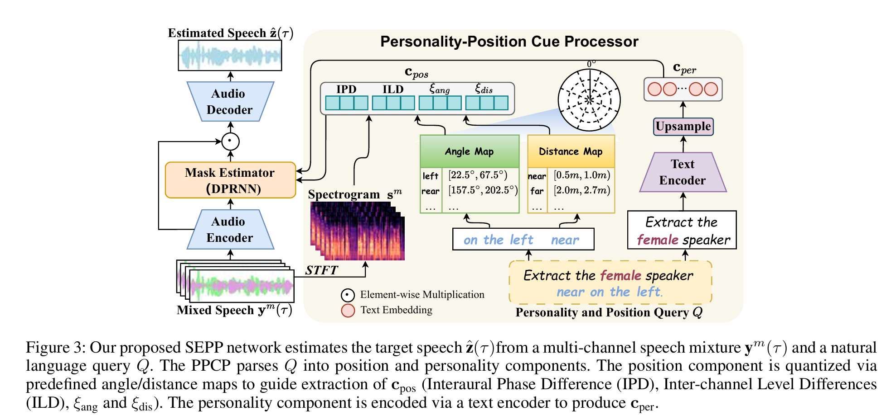
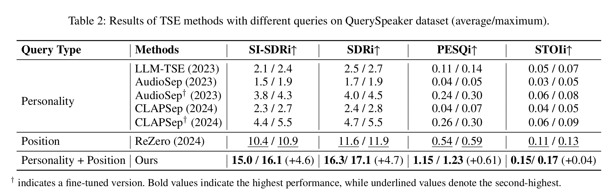

SSDQ framework

Target Speaker Extraction (TSE) identifies and isolates the voice of a specific speaker in the cocktail party situation and plays a pivotal role in numerous real-world applications. Recent advances in Personalized Query TSE (PQ-TSE) have enabled speaker extraction based on high-level speaker characteristics such as gender and language. However, these approaches are ineffective where the target speaker can only be identified based on spatial orientation or when multiple speakers exhibit highly similar personality traits. To address this limitation, we propose the Speaker Extraction with Personality and Position Queries (SEPP) framework, which incorporates both personalized and positional cues expressed through natural language descriptions. To address the scarcity of datasets, we further specifically designed and annotated a new benchmark dataset, QuerySpeaker. Extensive results show that our proposed method outperforms existing approaches and confirm the effectiveness of incorporating both personality and position cues, highlighting the complemen tary nature of these two modalities in guiding precise speaker extraction. Data and code will be released. Demo page: https: //d139f8bf.query-63l.pages.dev/


mixture
gt_spk1
Rezero_spk1
CLAPSep_spk1
Q_sem_spk1 (Ours)
Q_spa_spk1 (Ours)
DualQuery_spk1 (Ours)
mixture
gt_spk2
Rezero_spk2
CLAPSep_spk2
Q_sem_spk2 (Ours)
Q_spa_spk2 (Ours)
DualQuery_spk2 (Ours)
